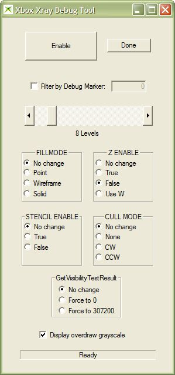
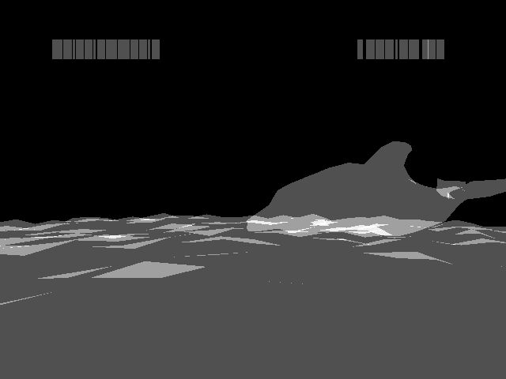

The Xbox Xray Debug Tool (XbXray) helps to debug overdraw problems in a running Xbox title. Overdraw, or the excessive redrawing of pixels, can be a major performance drain on a title. The Xbox Xray Debug Tool intercepts drawing calls made to the Xbox Development Kit, and then redraws the scene in grayscale. The brighter a pixel is colored by xbxray, the more times the running title has drawn that pixel to the screen.
USAGE: xbxray
When first started, the Xbox Xray Debug Tool presents a dialog box, which looks similar to the following:

To begin using XbXray, do the following:
If the default settings are used, the Xbox Xray Debug Tool should alter what the Xbox Development Kit draws to screen to produce an image similar to the following:

Note Repeatedly clicking Enable toggles on and off the XBXRAY tool's modification of the on-screen image. Click Done to exit the tool entirely.
The Filter by Debug Marker option tells the Xbox Xray Debug Tool to only draw geometry that has been marked by the SetDebugMarker function. Only objects drawn with the indicated debug marker will appear in the image rendered by XbXray.
The Levels slider sets the total levels of grayscale brightness that XbXray uses when rendering a scene. For example, at the default setting of 8 levels, the entire scene is rendered in 8 shades of gray. Adjusting the Levels slider can be useful to fine-tune the display produced by XbXray, particularly in scenes where a lot of overdraw occurs. Moving the slider to the right (lower number of levels) produces a brighter image with fewer gradations of overdraw. Moving the slider to the left (higher number of levels) renders a darker image with a wider range of gray values.
The FILLMODE settings change how objects are filled in the xbxray display, as described below:
The Z ENABLE settings define whether or not z-buffering is turned on while XbXray renders the scene, as described below:
Note By default, XbXray selects False to turn off z-buffering, because z-buffering can hide overdraw problems that may slow the performance of a title. The title might still be using CPU time to overdraw pixels, but the z-buffer might filter out some of those pixels before XbXray gets a chance to render them.
The STENCIL ENABLE settings allow you to turn stencil buffering on and off, as described below:
The CULL MODE settings control which faces of polygons are drawn by XbXray, as described below:
Note When selected, the Display overdraw grayscale check box tells XbXray to render the scene in its special overdraw grayscale mode. With the check box empty, XbXray renders the scene in whatever colors the title would normally use, but still applies the Filter by Debug Marker, FILLMODE, Z ENABLE, STENCIL ENABLE, and CULL MODE settings to the scene. While not useful for detecting overdraw, changing these other settings may be useful for diagnosing other kinds of drawing problems.
The GetVisibilityTestResult settings change the value returned by the GetVisibilityTestResult function. By changing this function's return value, you can see the effect that turning visibility testing on and off has on the amount of geometry your game title is drawing. Changing this function's return value can also let you see how much overdraw the title performs. The GetVisibilityTestResult options are described below:
The Xbox Xray Debug Tool cannot intercept geometry that is drawn by direct insertion into the pushbuffer or by using Begin/End. The Xbox Xray Debug Tool only recognizes vertices drawn using one of the following methods:
Note Anything drawn without using one of the above methods appears as it would normally be drawn on the screen, regardless of what settings you apply in XbXray.
If XbXray is enabled and the Xbox Movie Capture Tool (XbMovie) tool is capturing video, you will not be able to change any XbXray settings until XbMovie capture is disabled.
GetVisibilityTestResult, SetDebugMarker | Xbox Movie Capture Tool (XbMovie)